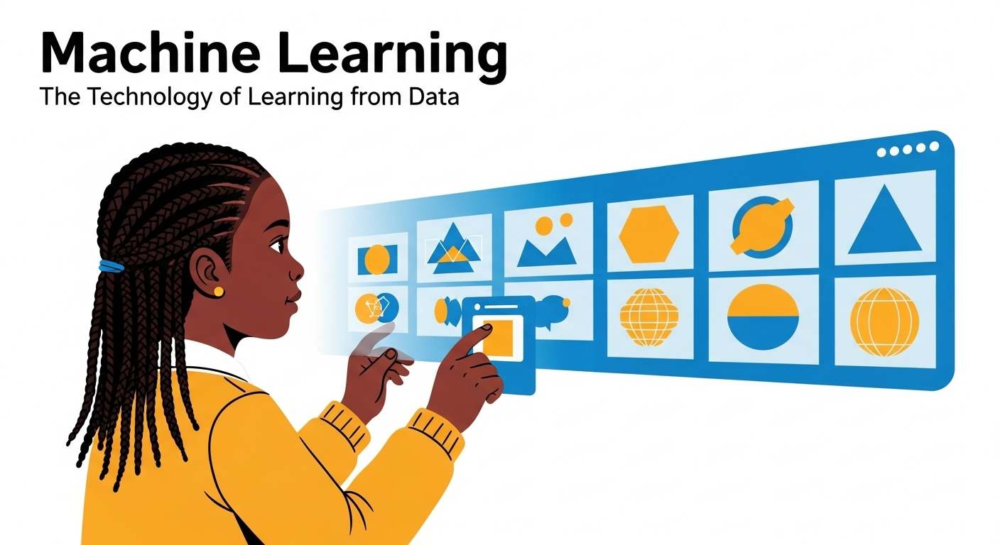
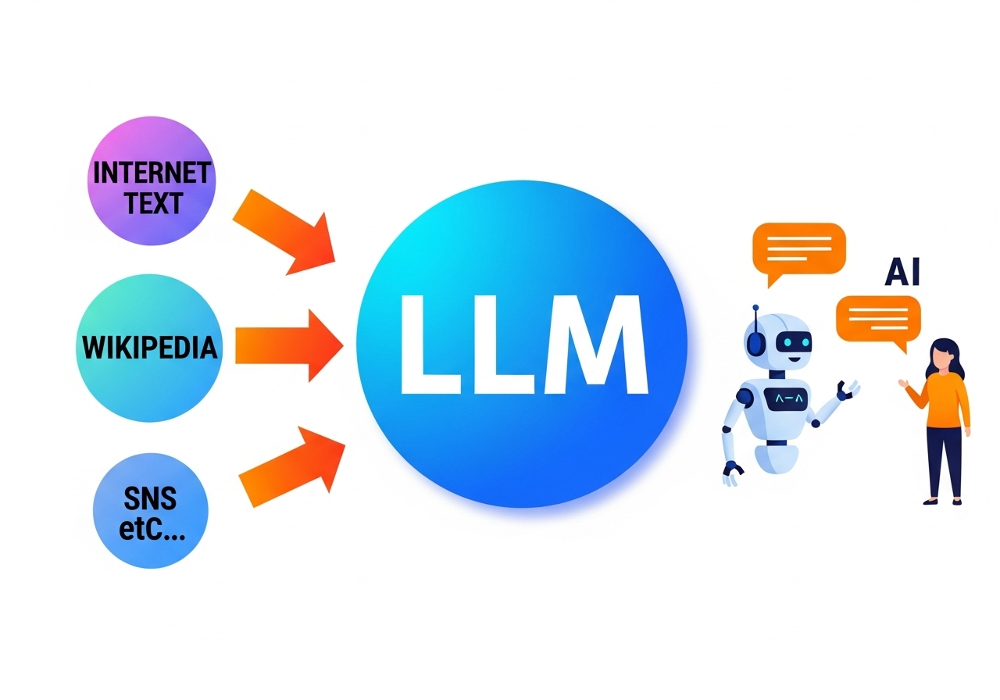
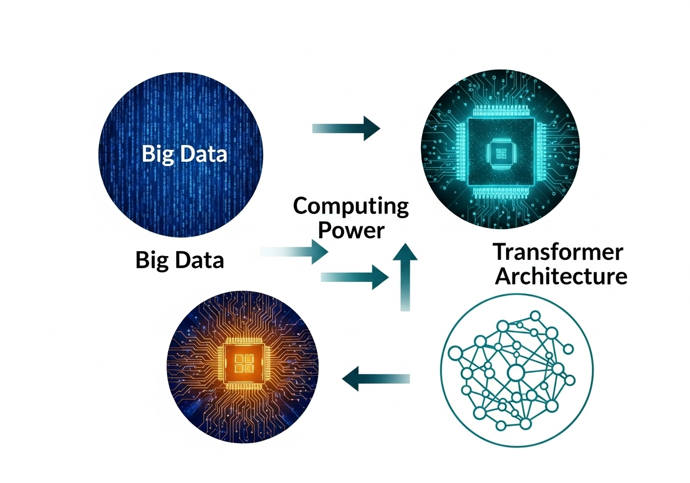

AI와 LLM의 세계로 초대합니다
초보자를 위한 안내서: AI, LLM, GPT... 대체 이게 뭔가요?
발표자: [김덕우]
Part 1: 인공지능 (AI)의 모든 것
AI, 왜 알아야 할까요?
AI는 이미 우리 삶 곳곳에 스며들어 있습니다. 스마트폰, 검색 엔진, 넷플릭스 추천 시스템, 심지어 자율주행차까지. AI는 이제 미래 기술이 아니라 '현재' 우리의 삶을 바꾸고 있는 기술입니다.

AI란 무엇인가?
- AI = Artificial Intelligence (인공지능)
- 정의: 인간처럼 생각하고, 배우고, 판단하는 능력을 갖춘 시스템
- 쉽게 말해: '스스로 똑똑해지는 기계'라고 생각하면 됩니다. 마치 인간이 '경험'을 통해 배우듯이, AI는 '데이터'를 통해 배웁니다.
AI의 역사: 과거에서 현재까지
- 탄생기 (1950-70년대): '다트머스 회의'에서 AI 용어 탄생. 초기에는 규칙과 논리를 따르는 '기호 기반 AI'가 주를 이뤘습니다.
- 암흑기 & 재도약 (1980-2000년대): 여러 실패로 'AI 겨울'이 찾아왔지만, 컴퓨터 성능 발전으로 '머신러닝'이 다시 주목받기 시작합니다.
- 머신러닝 시대 (2010년대): 빅데이터와 강력한 그래픽카드(GPU)를 활용하면서 AI가 폭발적으로 성장합니다. 알파고(AlphaGo)가 이 시대의 상징입니다.
- 현재 (2020년대): 챗GPT로 대표되는 '생성형 AI'와 'LLM'의 시대.

AI의 핵심 원리: 머신러닝
- 정의: 데이터를 통해 스스로 학습하고 패턴을 찾아내는 기술.
- 비유: '경험을 통해 배우는 어린아이'. 정답이 있는 문제집을 풀거나(지도 학습), 자유롭게 그림을 그리며(비지도 학습) 성장하는 과정과 비슷합니다.
- 머신러닝은 '데이터가 곧 교과서'라는 점을 명확히 전달합니다.

딥러닝: 머신러닝의 슈퍼스타
- 정의: 인간 뇌의 신경망을 모방한 '인공 신경망'을 사용하는 머신러닝의 한 분야.
- 특징:
- 데이터를 더 깊고 복잡하게 학습할 수 있습니다.
- 방대한 양의 데이터를 처리하는 데 탁월한 능력을 보입니다.
- 오늘날 AI 기술 발전의 가장 큰 원동력이며, 복잡한 이미지를 인식하거나 음성을 이해하는 기술이 딥러닝 덕분입니다.

AI, 머신러닝, 딥러닝의 관계
딥러닝은 머신러닝의 한 종류이고, 머신러닝은 AI를 구현하는 여러 방법 중 하나입니다. 이 관계를 명확히 함으로써 개념 혼동을 줄일 수 있습니다.

Part 2: 대규모 언어 모델 (LLM) 집중 탐구
LLM이란 무엇인가?
- LLM = Large Language Model (대규모 언어 모델)
- 정의: 방대한 양의 텍스트 데이터를 학습하여 사람의 언어를 이해하고, 자연스러운 언어를 생성하는 AI 모델.
- 비유: '세상의 모든 책을 읽고 말하기를 배운 천재'.
- LLM의 핵심은 '대규모 데이터(Large)'와 '언어(Language)'입니다. 수십 년간 쌓인 인터넷 텍스트, 위키피디아, 소설 등을 모두 학습했기 때문에 인간처럼 대화할 수 있게 된 것입니다.

LLM의 탄생 배경
- 빅데이터: 인터넷 발달로 인해 엄청난 양의 텍스트 데이터가 축적되었습니다.
- 컴퓨팅 파워: GPU 발전으로 대규모 계산이 가능해졌습니다.
- 트랜스포머 아키텍처: 획기적인 모델 구조인 '트랜스포머'의 등장으로 언어 학습 효율이 극대화되었습니다.
- 이 세 가지 요소가 시너지를 내면서 챗GPT와 같은 LLM이 탄생할 수 있었습니다.

LLM의 능력과 한계
- 능력: 대화, 글쓰기, 요약, 번역, 코드 생성 등 인간의 언어와 관련된 대부분의 작업을 수행할 수 있습니다.
- 한계:
- 환각 (Hallucination): 그럴듯하지만 사실과 다른 정보를 만들어낼 수 있습니다.
- 최신 정보 부족: 학습 시점 이후의 정보는 모를 수 있습니다.
- 편향성: 학습 데이터에 담긴 편향을 그대로 반영할 수 있습니다.
- LLM을 맹신하지 않고, '똑똑한 조수'처럼 활용해야 합니다. LLM의 답변을 항상 검증하고 비판적으로 바라보는 태도가 중요합니다.

우리 주변의 LLM
- 챗GPT, Gemini, 클로드 등: 유명 LLM 모델들
- 활용 사례: 챗봇, 검색 엔진, 문서 작성, 이메일 요약, 코드 자동 완성 등.
- LLM이 실제로 어떤 서비스에 적용되고 있는지 구체적인 예시를 보여주며, 멀게만 느껴졌던 기술이 얼마나 가까이 있는지 체감하게 합니다.

마치며: 미래를 준비하는 우리
AI와 LLM은 단순히 '도구'입니다. 이 강력한 도구를 제대로 이해하고, 능동적으로 활용하는 사람이 미래 사회의 경쟁력을 갖게 될 것입니다. 'AI에 대해 아는 것'을 넘어, 'AI를 활용하는 것'이 중요합니다.
질의응답 (Q&A)